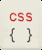

Slate is a templating engine that allows you to easily and quickly create native mobile user interface pages and views (UI's) using simple to use templates. Here is a high-level overview of the process :
template
|
+ |
data
|
= |
native mobile UI
|
 |
|
 |
|
 |
text template for your page with placeholders @name and @date |
|
supply data for @name and @date to replace the placeholders |
|
slate combines your template with the data and builds a native mobile page/view |
Slate templates are currently available for android and windows phone as libraries. They can be easily integrated into your native apps.
Let's look at a short example. More examples are available at the bottom of this page and on github.
There is also a full documentation and api guide on the github wiki.
template.core
{
list down
{
h4 @companyName
p 'A mobile development company'
text6.accent 'Slate Calendar'
text6 @appAbout
}
}
The easy and concise syntax in slate templates is almost 40% to 60% less than the xml required to build the same UI in android and windows!
<LinearLayout
android:layout_width="match_parent"
android:layout_height="wrap_content"
android:orientation="vertical" >
<TextView
android:layout_width="wrap_content"
android:layout_height="wrap_content"
style="@style/H4"
android:fontFamily="sans-serif-light"
android:text="@string/companyName" />
<TextView
android:layout_width="wrap_content"
android:layout_height="wrap_content"
style="@style/Text6"
android:fontFamily="sans-serif-light"
android:text="A mobile development company" />
<TextView
android:layout_width="wrap_content"
android:layout_height="wrap_content"
style="@style/Text6.Accent"
android:fontFamily="sans-serif-light"
android:text="Slate Calendar" />
<TextView
android:id="@+id/txtAboutVersion"
android:layout_width="wrap_content"
android:layout_height="wrap_content"
style="@style/Text6.Contrast"
android:fontFamily="sans-serif-light"
android:text="@string/appAbout" />
</LinearLayout>
There are several reasons for using slate templates for android & windows:
 | easily build content easily build both static and dynamic content |
 | rapid prototyping create fast native mobile UI mock ups |
| | cross platform UI write your UI once for both android & windows |
| | save costs reduce UI development time |
 | dynamic loading UI templates can reside on your server |
The templating features of slate have been designed for optimal productivity. Here are most of the major features:
 | 40 % to 60% smaller than xml intuitive, and very concise syntax |
 | % widths for different screen sizes relative widths to support various screen sizes |
 | secure templating mostly logic-less, no access to device, only data |
| optionally use mock data for protyping easily use real or fake data for testing |
|  | css / less like syntax for styling low learning curve due |
Slate templates are used in a production android calendar app on google play. The templates are used to generate cards or what we call "boards" on the home page. Check out Slate Calendar for live examples.
Lets dive into some details..
Slate syntax is very intuitive, concise and similar to code. As a result, it significantly reduces both the complexity and size.
- Uses braces { } instead on end tags
- Elements have attributes ( key=value pairs )
- Some elements have blocks to allow child elements, such as "list"
- Elements have default attributes, so you can leave out the "key="
- Some attribute values which are numeric don't require being enclosed in quotes
- You can set the style for the element easily using .style as in text.strong
- You can name an element by using :name after the tag as in text:firstName
template.core
{
// 1. List items down vs across
list down
{
// 2. Sample heading / text
// h1 - h6 and text1 - text 6 supported
h2 'heading in size 2'
p 'sample paragraph text'
// 3. Apply styles to paragraph text
text6.accent 'this text is accented'
// 4. Set placeholders to replace with data
text6.strong @companyName
// 5. Set the name of the element using :name
p:appDesc 'native mobile templating on android'
// 6. Tags are also available
p 'kishore' tag='firstname'
// 7. Loop over calendar events data, and list 4
@each ( event in @calendar.events limit=4 )
{
// 8. List each calendar event across
// Relative widths for different screen sizes
list across width='80%'
{
// 9. Reference the event variable from loop
h5 @event.time
text6.accent @event.title
}
}
}
}
Currently, slate templates are available for android and windows as libraries. For android, slate templates are used in a production android calendar app, that is currently available on google play. Check out Slate Calendar. The windows version is also available as more of an alpha version.
| |
| android JAVA library | C# library for windows/phone |
With slate, you can store your templates on your server or cloud storage and fetch them at runtime! This allows you to control your UI and display centrally without having to re-submit your app to the store. Compare this with android and windows, where your pages / controls / views are representing in xml files that have to be packaged as part of your app.
// ANDROID : In android your UI is an xml file
// packaged in the app. you load the layout like :
View viewFromFile = inflate(R.layout.eventInfo, null);
// SLATE: You have different ways to load the UI
// 1. Load from a string
View viewFromText = loadTemplate("text6:name 'user name'");
// 2. Load template file from assets folder.
View viewFromFile = loadTemplateFile("page_about.txt");
// 3. Load from your server
// ( basically just download file and load as text)
String templateContent = getFromServer("page_about.txt");
View viewFromText = loadTemplate(templateContent);
// The templates are safe / secure as they
// are mostly logic-less and can't access any
// device functionality... only data supplied.
One of the core problems with mobile UI development is handling different resolutions. Slate solves a big part of this problem by supporting relative or percentage based widths. Typically, you have to set up the width of an android control to be MATCH_PARENT, WRAP_CONTENT or a phyical number dp (device independent pixels). The problem is that even the dp's vary from device to device. By supporting % widths ( in addition to WRAP_CONTENT ), slates solves a number of resolution issues, while keeping the code base very small. Later on we will see how relative margins and padding are also supported.
template.core
{
list down
{
list across width=200
{
p 'this is 20% of parent' width='20%'
}
list across width='50%'
{
p 'list is 50% of parent'
}
}
}
When initially designing your page / UI, you have to display some fake data for testing purposes. Slate has a very unique feature that allows definition of fake or mock data for prototyping / testing purposes. You can easily enable and disable mock data with the use of pre-processor variables. See example below:
// 1. define pre-processor variables
define test-data
setup
{
// 2. Only include mock data if pre-processor
// variable exists.
ifdef test-data
set events =
[
{ name: 'meeting 1', time: '10:00 am' },
{ name: 'meeting 2', time: '11:00 am' },
{ name: 'meeting 3', time: '2:30 pm' },
{ name: 'meeting 4', time: '3:00 pm' }
];
endif
}
template.core
{
list down
{
// 3. Now use the mock data
// Note: the list 'events' can be supplied
// from code. this example is for mock data
@each( event in events )
{
text6.accent @event.name
text6.strong @event.location
}
}
}
Slate templates are secure in that they can only access data ( lists, objects, maps ) that you supply to the system. There is currently no way for the templates to access any system / device level features.
Also, the templating system has been designed to be mostly logic-less, similar to handlebars or moustache. For example, there are no if conditions but you can optionally load/disable controls from being shown.
You can not have a dynamic UI creation process without support customization and styling of the content. This is where the Slate Css like style sheets come in. Slate allows you to tag your UI elements ( like text, heading, list, etc ) with styles that are placed in a separate "stylesheet" ( very similar to css ). The added benefit here is that the stylesheets :
- support internal variables ( from inside file )
- support external variables ( from your code )
- relative widths
- math calculations
- css-like syntax
- style groups
- inherit from style groups
/* STYLES FILE : theme_default.txt
In slate, you can create a styles file ( to represent a theme )
to store all your styles for UI elements.
Featues are listed in comments below:
*/
/* 1. VARIABLES
You can setup variables just like in sass/less,
but putting the variables inside the 'vars' block.
*/
vars
{
screenWidth: @app.screenWidth;
screenHeight: @app.screenHeight;
pageWidth: @app.pageWidth;
themeColor: @app.themeColor;
baseTopFontSize: @app.textFontSizeMax;
baseTextColor: @app.textColor;
baseTextColorAccent: @app.textColorAccent;
baseTextColorLight: @app.textColorLight;
baseTextColorContrast: @app.textColorContrast;
baseTextHeaderWeight: bold;
}
/* 2. STYLE GROUPS:
Setup a style group called 'core'
In your template link to this style group via syntax:
template.core { .... }
*/
group:core
{
h1 { font-weight: @baseTextHeaderWeight; }
h2 { font-weight: @baseTextHeaderWeight; }
h3 { font-weight: @baseTextHeaderWeight; }
h4 { font-weight: @baseTextHeaderWeight; }
h5 { font-weight: @baseTextHeaderWeight; }
h6 { font-weight: @baseTextHeaderWeight; }
text1 { color: @baseTextColor; }
text2 { color: @baseTextColor; }
text3 { color: @baseTextColor; }
text4 { color: @baseTextColor; }
text5 { color: @baseTextColor; }
text6 { color: @baseTextColor; }
.light { color: @baseTextColorLight; }
.strong { font-weight:bold; }
.accentlight { color: @baseTextColorAccent; }
.accent { color: @baseTextColorAccent; }
.accentdark { color: @baseTextColorAccent; }
.label { color: Gray; }
.contrast { color: @baseTextColorContrast; }
.white { color:'White'; }
.separator { background-color:'#cccccc'; }
.left { alignh:'center'; }
.center { alignh:'center'; }
.right { alignh:'right'; }
/* 3. MATH OPERATIONS
Basic math operations are supported for dynamic
width and height calculations.
*/
.col1 { width: ( @screenWidth * .08 ); }
.col2 { width: ( @screenWidth * .16 ); }
.col3 { width: ( @screenWidth * .25 ); }
.col4 { width: ( @screenWidth * .33 ); }
.col5 { width: ( @screenWidth * .42 ); }
.col6 { width: ( @screenWidth * .50 ); }
.col7 { width: ( @screenWidth * .58 ); }
.col8 { width: ( @screenWidth * .66 ); }
.col9 { width: ( @screenWidth * .75 ); }
.col10 { width: ( @screenWidth * .83 ); }
.col11 { width: ( @screenWidth * .91 ); }
.col12 { width: @screenWidth ; }
/* 4. VARIABLE USAGE
You can use the variables using the '@' symbol.
You can either use variables declared in 'vars'
or you can use variables supplied from your app
by using @app.variablename.
*/
.iconXSmall { width: @app.iconXSmall; }
.iconSmall { width: @app.iconSmall; }
.iconMedium { width: @app.iconMedium; }
.iconLarge { width: @app.iconLarge; }
.iconLarge { width: @app.iconXLarge; }
.marginl1 { margin-left: ( @screenWidth * .01 ); }
.marginl2 { margin-left: ( @screenWidth * .02 ); }
.marginl3 { margin-left: ( @screenWidth * .03 ); }
.marginl4 { margin-left: ( @screenWidth * .04 ); }
.marginl5 { margin-left: ( @screenWidth * .05 ); }
.marginl6 { margin-left: ( @screenWidth * .06 ); }
.marginl7 { margin-left: ( @screenWidth * .07 ); }
}
/* INHERITANCE
You can create multiple style groups and have them
inherit from another style group
*/
group:aboutpage inherits=core
{
}
Lets look at some sample code in android to run a template
import com.slate.templates.templating.*;
...
TemplateService svc = new TemplateService();
// 1. Fill the context with all the neccessary info.
// - android context to create controls
// - window manager to figure out screen dimensions
// - resources to load files
svc.initialize(aboutActivity);
// 2. Put some data into template
svc.putData("firstname", "john");
// 3. Load the theme file ( just like css )
svc.loadTheme("theme_default.txt");
// 4. Now execute template and get view
TemplateView tview = svc.executeTemplate("text6 @firstname");
// NOTE: More options are available, this is a short example
We will soon provide a few pre-defined, well designed templates ( using slate ) for some common pages. This will provide both good examples on how to use slate as well as having a nice bootstrapped with boiler-plate content ready to go. Predefined templates will be available for the following pages:
- about us
- contact us
- help
- upcoming features
Slate templates library is closed source for the time being, with potential plugins / extensions that may become open-source. You can use the library given the following restrictions and considerations:
Check full license here
Common restrictions
You can NOT do the following regardless of personal / commercial use.
- you can not redistribute the jar file for others to use
- you can not use the jar file on a server, only on mobile device / tablet
- you can not make any modifications to the code
- please contact us for any custom changes to the license for your business
Pesonal use / Beta version
NOTES: All the common restrictions listed above apply.
- acknowledge use of slate templates in your app ( in either an about or help page )
- your android/windows based app must be free without in-app purchases.
- beta version is free to use for both personal and commercial use.
- please note the beta version may have bugs and or other issues
- beta version may have issues, we are targeting a production version for late july
Commercial Version
NOTE: All the common restrictions listed above apply
- license fee is $40 for 1 year commercial subscription
- commercial use applies to paid apps or apps with in-app purchases
- commercial use applies to enterprise organizations using slate templates
- we are willing to accommodate changes to the license for your business, please contact us
Slate Templates is a product of Code Helix Solutions Inc., a software and mobile development company. We develop open-source software, and are also currently focused on developing tools for the android and windows phone platforms. Slate Calendar is our core mobile application.
Kishore Reddy
Kishore is founder of CodeHelix Solutions Inc., and architect of Slate templates, Slate Calendar and multiple open-source projects
Mahesh Gottumukkala
Mahesh is co-founder of CodeHelix Solutions Inc., and is involved in product management and development activities.
Part-time members
We have a small 2-3 person team of consultants working in india.
You can contact @kishorereddy for more information about slate templates.
Issues and feature requests
Feel free to post questions, issues, feature requests on the git hub issue tracker.
We will be monitoring this routinely for both issues ( in beta ) as well potential feature requests. You will also find a list of prioritized upcoming features.
Documentation
Documentation on how to use the templates are located at the Slate Templates Wiki. You will also find docs on how to integrate with android and soon windows.